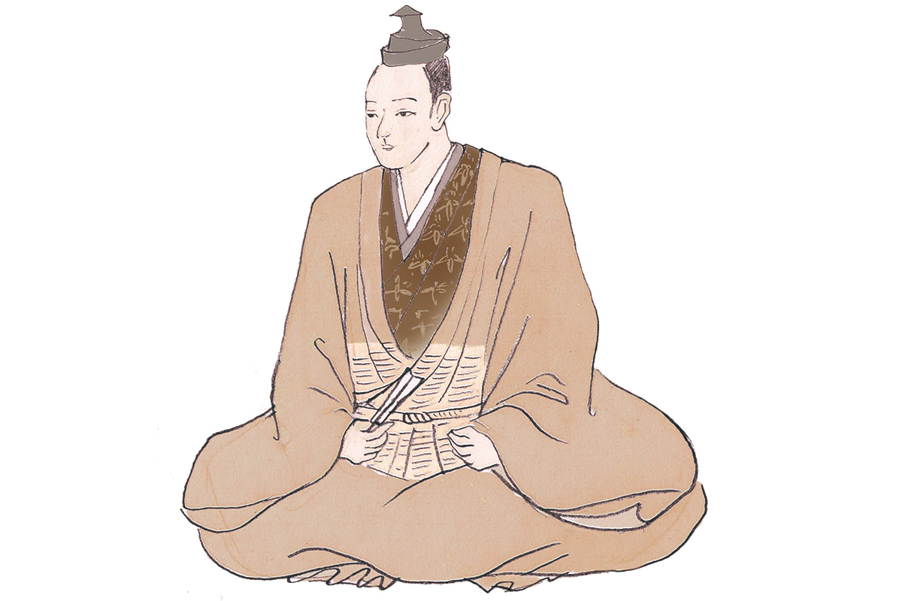
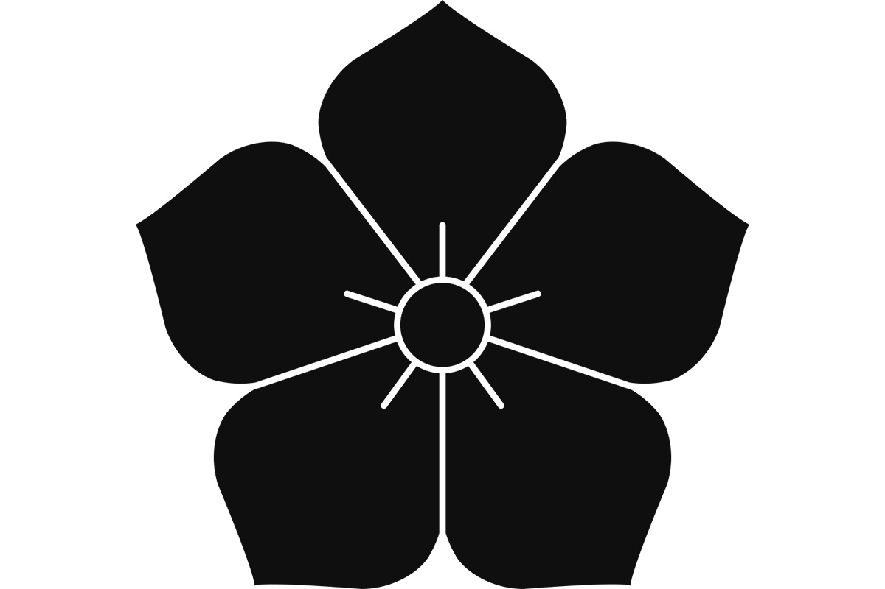

Префектура Гифу · Кани · история
Мицухидэ Акэти: самурай из Мино, который за одну ночь изменил историю Японии

Эпоха воюющих провинций дала Японии десятки легендарных полководцев, и среди них мало кто так резко изменил ход истории, как Мицухидэ Акэти. Он родом из провинции Мино, южной части нынешней префектуры Гифу.
Эпоха
Время, когда страна воевала сама с собой
С конца XV до конца XVI века Япония жила в непрерывной войне. Сёгунат Муромати окончательно потерял власть, и место прежних наместников провинций заняли новые князья, которые силой оружия расширяли свои владения. Этот век называют эпохой Сэнгоку, эпохой воюющих провинций, и многие её полководцы до сих пор остаются героями книг, фильмов и сериалов.
Мицухидэ Акэти (1528?–1582) среди них фигура особенная. Он родился, как считается, около 1528 года в провинции Мино. Его род Акэти вёл начало от клана Токи, ветви древнего рода Минамото. В молодости его звали Дзюбэй, затем Мицухидэ Акэти, а в конце жизни он носил имя Корэто Хюга-но ками. Его законной женой была Хироко, дочь Норихиро Цумаки.

Мятеж
Хонно-дзи и одиннадцать дней
Акэти служил Нобунаге Оде (1534–1582), князю, который начал объединение Японии и подчинил себе большую часть страны. В 1582 году вассал поднял мятеж: войска Акэти окружили храм Хонно-дзи в Киото, где остановился Нобунага, и тот покончил с собой.
«Враг в Хонно-дзи»
Мицухидэ Акэти, 1582 год
Нобунага приказал ему идти на запад, против клана Мори, и Акэти уже был в пути. Вдруг он повернул войско и, как рассказывают, произнёс эту фразу: врагом, которого нужно разить, для него был сам Нобунага.
Торжество длилось недолго. Хидэёси Хасиба (1537–1598), будущий Хидэёси Тоётоми и преемник Нобунаги в деле объединения страны, в это время осаждал замок Такамацу далеко на западе. Узнав о мятеже, он стремительно повёл армию назад. В битве при Ямадзаки Акэти был разбит и бежал, но его заметил крестьянин, охотившийся на беглых воинов, и заколол копьём. Всё это случилось всего через 11 дней после Хонно-дзи: быстрота Хидэёси решила дело.
Почему Акэти восстал против господина, неизвестно до сих пор. Говорят о личной обиде, о том, что за мятежом стоял кто-то другой, и версий у историков много. Ясно одно: этот человек за одну ночь изменил течение эпохи воюющих провинций, и без него историю Японии не рассказать.
Летопись
Жизнь Акэти по годам
- 1528. Рождение в провинции Мино (год считается предположительным).
- 1556. Акэти служит Досану Сайто (1494?–1556), правителю провинции. В войне Досана с собственным сыном Ёситацу (1527–1561) Акэти держит сторону отца, войска Ёситацу берут замок Акэти, и род рассеивается.
- 1568. Поступает на службу к Ёсикагэ Асакуре (1533–1573), князю соседней провинции Этидзэн.
- 1571. Отличается при сожжении монастырей на горе Хиэй и строит замок Сакамото на озере Бива, ставший его резиденцией.
- 1575. Получает фамилию Корэто, придворный ранг и титул Хюга-но ками и с этого времени зовётся Корэто Хюга-но ками.
- 1579. Покоряет провинцию Тамба к северо-западу от Киото.
- 1580. Становится хозяином замка Камэяма в Тамбе.
- 1582. Поднимает мятеж в Хонно-дзи, и Нобунага кончает с собой. После битвы при Ямадзаки гибнет во время бегства.
Где увидеть
Следы Акэти в префектуре Гифу
Самые известные места, связанные с Акэти в Гифу, находятся в городе Кани на юге префектуры. Туристический сайт префектуры называет Кани родиной Акэти.
Руины замка Акэти
Замок Акэти, тот самый, который взяли войска Ёситацу в 1556 году, стоял на холме в Кани. Предание говорит, что Мицухидэ прожил в нём около тридцати лет, до падения крепости. Это типичный средневековый горный замок, построенный с опорой на рельеф. По склонам проложены прогулочные тропы, и подъём на холм похож на небольшую пешую прогулку по лесу.
Руины замка Акэти
- Адрес
- префектура Гифу, Кани, Сэта
- Телефон
- +81 574-62-1111 (мэрия Кани)
- Как добраться
- около 23 минут пешком от станции Акэти линии Мэйтэцу Хироми; на машине около 10 минут от развязки Кани-Митакэ скоростной дороги Токай-Кандзё, парковка у склона Кикё-дзака
- Сайт
- kani-kankou.jp
Храм Тэнрю-дзи
У подножия замкового холма стоит храм Тэнрю-дзи. Здесь хранят поминальную табличку Мицухидэ Акэти, которую называют самой большой в Японии. Её высота 6 сяку 1 сун 3 бу (около 184 см) отсылает ко дню его смерти: 13-му дню 6-го месяца. На территории храма находятся могилы рода Акэти, а каждый июнь здесь проходит поминальная служба по Мицухидэ.
Храм Тэнрю-дзи
- Адрес
- префектура Гифу, Кани, Сэта, 1242
- Телефон
- +81 574-62-1111 (мэрия Кани)
- Как добраться
- около 19 минут пешком от станции Акэти линии Мэйтэцу Хироми
Фото: Мария Араи (иллюстрация).